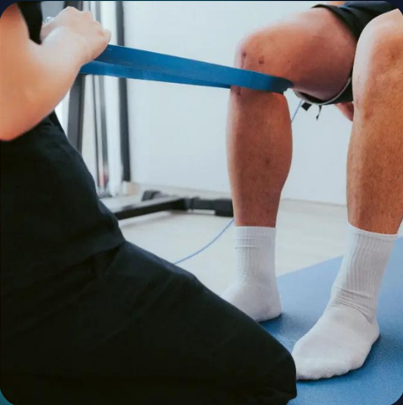

Kineva
Alta
performace

A Kineva é uma startup
focada em transformar o
apoio à fisioterapia por meio
de cálculos especializados.
Nosso sistema foi projetado para auxiliar fisioterapeutas a realizar medições
e avaliações precisas, otimizando o tratamento dos pacientes. Com a
tecnologia da Kineva, buscamos aprimorar o processo de reabilitação,
oferecendo ferramentas que combinam ciência e inovação, facilitando o
acompanhamento do progresso dos pacientes e permitindo que os
profissionais tomem decisões baseadas em dados mais detalhados e
personalizados.
Realize cálculos
precisos
Use o Kineva para realizar cálculos que auxiliam
nas avaliações fisioterapêuticas e otimizam os
resultados dos seus pacientes.
O Kineva permite que você obtenha dados
detalhados, oferecendo um suporte essencial
para profissionais da fisioterapia. Com
ferramentas avançadas, você poderá realizar
medições e cálculos de forma rápida e eficiente,
proporcionando maior precisão nas avaliações
e tratamentos.
Monitore o
progresso
O sistema de cálculo da Kineva substitui
métodos manuais, oferecendo análises
automáticas e rápidas dos resultados.
Nossos testes especializados vão mudar a
maneira como você lida com avaliações
fisioterapêuticas, permitindo que você
acompanhe o progresso dos pacientes com
maior precisão e eficiência, facilitando o
ajuste e aprimoramento dos tratamentos.